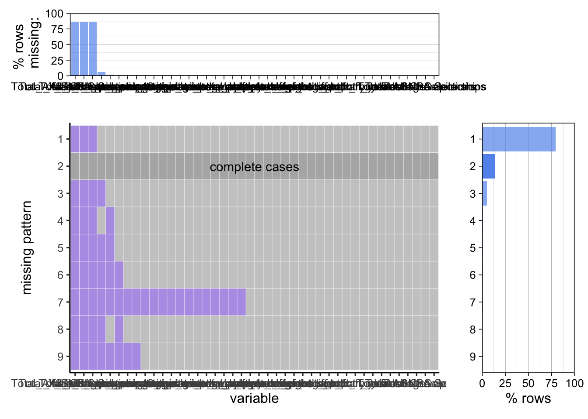

For our project, we have selected two primary datasets on NBA players available on Kaggle. These datasets are sourced from Basketball Reference, a highly respected provider of NBA data. Opting for these pre-aggregated datasets allows us to concentrate on analysis and visualization without the need for extensive data scraping and compilation. Covering over two decades, these datasets encompass player demographics like age, height, weight, and birthplace, alongside biographical information such as the team they played for, their draft year, and the draft round. They also include basic statistical data such as games played, and average points, rebounds, and assists. The latest update for these datasets is from the 2021 season, and we plan to import them in CSV file format.
Additionally, we will be using specific data directly from Basketball Reference, particularly for achievements and advanced statistics, to ensure currency and relevance. This includes all-star game selections, all-NBA selections, and championships. One notable limitation with the championships data is its inclusion criterion—only players with at least three championships are listed. To address this, we will either manually incorporate players with at least one championship or address this point in our results. While some data from Basketball Reference can be directly imported as CSV files, other datasets will require manual assembly. Furthermore, advanced NBA statistics will be sourced directly from the NBA’s official site. As this data is not available for export, manual collection will be necessary for incorporation into our analysis.
Finally, we are utilizing an additional Kaggle dataset that extensively monitors reported NBA player injuries, compiled by Pro Sports Transactions. Despite not being as renowned as Basketball Reference, this site provides an extensive compilation of data for various sports such as baseball, hockey, soccer, football, and basketball. This dataset, in CSV format, includes updated information for the current season.
Our project leverages comprehensive datasets that enable us to delve deeply into various facets of NBA drafting strategies and their outcomes. By thoroughly analyzing these datasets, we will uncover insights into the effectiveness of different teams’ drafting approaches, trends in player attributes, and the impact of draft positions on player success.
We aim to identify teams proficient in drafting the “best” players. To achieve this, we will use datasets containing detailed information about players’ draft specifics, such as the drafting team, and their career achievements, including NBA championships, All-Star, and All-NBA selections. By correlating the number of high-achieving players a team has drafted with the team itself, we plan to create visualizations that demonstrate which teams consistently identify top talent. This analysis will involve graphing the frequency of high-achieving players in relation to the teams that drafted them.
Our study also examines the advantages of drafting players based on physical attributes like height, weight, or country of birth. Utilizing the extensive data available, we will analyze trends in these attributes among first-round picks over time. We intend to graph the average height and weight of first-round picks across different years to discern any significant trends. Additionally, we’ll investigate the proportion of American versus non-American players drafted in the first round, and whether certain teams prefer non-American players. These analyses will aid in understanding the role of physical attributes and nationality in drafting decisions.
Another critical aspect of our research is assessing the effectiveness of early draft picks. We plan to compare the average performance statistics, such as points, assists, and rebounds, of the top 10 and bottom 10 players from each draft year. By graphing these metrics across multiple seasons, we can evaluate whether early draft selections are indicative of future success in the NBA.
Furthermore, our analysis includes evaluating how well teams develop their drafted players. We will compare the statistics of rookies at the start and end of their initial contracts across different teams to identify which teams are most successful at enhancing their players’ skills. Visualizations depicting the percentage improvement in key stats for each team will highlight those with effective player development programs. The injury dataset we have selected will allow us to explore the health management practices of teams, especially regarding rookies. We plan to identify the teams with the highest incidence of rookie injuries, which could point to potential areas for improvement in their training and health management strategies.
Lastly, we will investigate whether players from specific colleges are more likely to achieve success in the NBA. By correlating players’ college backgrounds with their draft positions and subsequent professional accomplishments, we can create visualizations that display the number of top-10 draft picks, NBA champions, All-Stars, and All-NBA selections from each college. This analysis will offer insights into the effectiveness of different college programs in preparing players for the NBA.
2.3 Missing value analysis
2.3.1 Data Preprocess
Code
#install.packages("dplyr")library(dplyr)
Attaching package: 'dplyr'
The following objects are masked from 'package:stats':
filter, lag
The following objects are masked from 'package:base':
intersect, setdiff, setequal, union
Scale for y is already present.
Adding another scale for y, which will replace the existing scale.
Scale for y is already present.
Adding another scale for y, which will replace the existing scale.

From the print result, we can see that the column with the most missing values is “3_point_percentage” (6%), and “free_throw_percentage” has 27 missing values, accounting for 1.9% of the total data. A few other columns have fewer than 10 missing values each. The missing values only account for a small percentage of the total data. When examining the missing value pattern from the graph above, we discover that over 90% of the rows are complete, and the most common missing pattern is the absence of data in the “X3_point_percentage” column.
We have observed that there are zeros in columns such as “3_point_percentage” and “free_throw_percentage,” so “na” does not indicate that the player did not score 3 points or did not earn free throw points. Instead, it is not recorded due to unknown factors or data loss on the website. We have verified this data on the original website (https://www.basketball-reference.com/), where it is also not recorded. Additionally, we have noticed that missing values in one column are correlated with missing values in another column. Otherwise, the missing pattern would be a single missing value in each row. We will investigate this further in the following graph. There are also two players with a significant amount of missing data.
df$na_count <-rowSums(is.na(df))df$draft_number <-as.numeric(df$draft_number)ggplot(df, aes(total_game, na_count))+geom_point()+labs(title ="Relationship between na_counts and total game")
From the graph above, we can observe that the two players with 17 “na” values have played only a few games, and as a result, all their statistics are not recorded: Jason Preston and RaiQuan Gray. Doing some research, both players were waived by their teams and are playing in the G-League (minor league organization of the NBA), therefore, we will exclude these two players from our analysis which is focused on NBA players.
We have also noticed that players with “na” values tend to have fewer total games in the NBA, and the fewer games they have played, the more “na” values are present in their statistics. This suggests that the “na” values are associated with fewer appearances, possibly indicating poorer performance. Therefore, we cannot simply discard this data. Given the limited number of missing values, we may consider using linear regression or averaging to replace the “na” values in these cases.